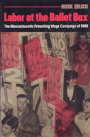

Intriguing case study of the roadblocks for unions in building political consensus
Intriguing case study of the roadblocks for unions in building political consensus


 Intriguing case study of the roadblocks for unions in building political consensus
Intriguing case study of the roadblocks for unions in building political consensus

|  |
Labor at the Ballot BoxThe Massachusetts Prevailing Wage Campaign of 1988Mark Erlichcloth EAN: 978-0-87722-727-4 (ISBN: 0-87722-727-6) |
"Erlich's account highlights the grassroots activism that reached into every community of the state and brought forth a significant victory for organized labor and all working people."
—Cesar Chavez
This participant’s account of a successful electoral mobilization of the labor movement presents an intriguing case study of the roadblocks for unions in building political consensus as well as avenues to success.
Labor at the Ballot Box is, above all, a story of hope. It documents an unusual election in Massachusetts in 1988, when the campaign over referendum question #2 transformed a vote on a little-known law governing wages on public construction projects into a highly visible debate on the larger issue of corporate greed vs. workers’ rights.
Mark Erlich records the historical context, locally and nationally, of the Massachusetts prevailing wage campaign, along with the strategies, both new and old, which proved victorious in the face of formidable odds, In his narrative, illustrated with 21 photographs of the campaign, he details the difficult coalition-building strategy that linked the traditionally insular and predominantly white, male building trades unions with a spectrum of community groups as well as organizations representing women and people of color. He demonstrates why progressives must build upon labor’s often ignored traditions of social change and grassroots mobilization of union members. Ultimately, this study demonstrates that working collectively, linking everyday life to broader issues, and involving people in shaping their own destiny is critical to success.
"At last, here's a book that recounts dramatically a triumph for rank and file laboring people: a victory at the ballot box. It is more than a political lesson of grassroots power; it sounds a hopeful note at a time when it is most needed."
—Studs Terkel
Mark Erlich is Program Director of the Massachusetts Building Trades Council and the author of With Our Hands: The Story of Carpenters in Massachusetts (Temple).
American Studies
Labor Studies and Work
Labor and Social Change, edited by Paula Rayman and Carmen Sirianni.
Labor and Social Change, edited by Paula Rayman and Carmen Sirianni, includes books on workplace issues like worker participation, quality of work life, shorter hours, technological change, and productivity, as well as union and community organizing and ethnographies of particular occupations.
© 2015 Temple University. All Rights Reserved. This page: http://www.temple.edu/tempress/titles/749_reg.html.